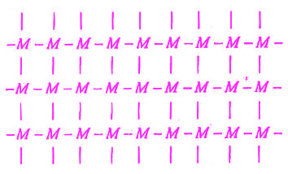

Q.28 : प्लास्टिक क्या हैं ? इनका वर्गीकरण कीजिए। प्लास्टिक के उपयोग लिखिए।
उत्तर - प्लास्टिक वह पदार्थ है जिसमें प्लास्टिकृता या सुघट्यता (plasticity) का गुण पाया जाता है अर्थात् प्लास्टिक उच्च अणु भार वाले वे कार्बनिक पदार्थ हैं जिन्हें किसी उत्प्रेरक की उपस्थिति में उचित ताप तथा दाब पर वांछित रूप में ढाला जा सकता है।
प्लास्टिक का वर्गीकरण (Classification of Plastic)- प्लास्टिक को निम्नलिखित। दो भागों में विभाजित किया जा सकता है -
(i) थर्मोप्लास्टिक- थर्मोप्लास्टिक वे पदार्थ हैं जो गरम करने पर मृदुल हो जाते हैं। तथा ठंडा करने पर कठोर हो जाते हैं अर्थात् इनकी कठोरता एक अस्थायी गुण है जो ताप बढ़ने या घटने पर परिवर्तित हो जाती है। इस प्रकार गरम करने पर ये मृदु ही बने रहते हैं। ठण्डा करने पर ये अपनी पूर्व दृढ़ता तथा कठोरता प्राप्त कर लेते हैं। बार-बार गरम करने तथा ठण्डा करने पर भी इनकी रासायनिक संरचना में कोई परिवर्तन नहीं आता है।
इस प्रकार की प्लास्टिक का निर्माण योगशील 'बहुलीकरण के फलस्वरूप होता है। तथा इनमें लम्बी श्रृंखला के अणुओं की संरचना पाई जाती है, जैसे –
- M - M - M - M - M - M - M - M - M -
लंबी श्रृंखला युक्त संरचना
पॉलिथीन (PE), पॉलिप्रोपिलीन (PP), पॉलिविनाइल क्लोराइड (PVC), पॉलिस्टाइरिन (PS), नाइलॉन, टेफ्लॉन आदि थर्मोप्लास्टिक के प्रमुख उदाहरण हैं।
(ii) थर्मोसेटिंग प्लास्टिक - ये वे प्लास्टिक पदार्थ हैं जो साँचे में ढालने (moulding) के प्रक्रम में कठोर हो जाते हैं तथा एक बार ठोस बन जाने के बाद उन्हें पुनः मृदु नहीं किया जा सकता है अर्थात वे स्थायी रूप से सेटिंग प्लास्टिक बन जाते हैं। इस प्रकार के प्लास्टिक, साँचे में ढालने के समय प्रबल सहसंयोजी बन्ध द्वारा त्रिविमीय क्रॉस-लिंक्ड संरचना प्राप्त कर लेते हैं, जैसे - क्रॉस-लिंक्ड थर्मोसेट्स प्लास्टिक, जहाँ M मोनोमर अणु है।

ये बन्ध गरम करने पर भी अपनी शक्ति ग्रहण कर लेते हैं। यदि इन्हें बराबर गरम करते रहें तो इनमें अंगारण (charring) उत्पन्न हो जाता है जबकि मृदु अवस्था में ये प्लास्टिक शीघ्रतापूर्वक कठोर हो जाते हैं। बैकलाइट, पॉलिएस्टर तथा इपोक्सी रेजिन आदि थर्मोसेट्स के प्रमुख उदाहरण हैं।
प्लास्टिक के उपयोग- प्लास्टिक के प्रमुख उपयोग निम्नलिखित हैं –
(i) पॉलिविनाइल क्लोराइड - इसका उपयोग प्लास्टिक के पाइप, ग्रामोफोन रिकॉर्ड, हैण्ड बैग, रेनकोट, जलरोधी पर्दे तथा अन्य वाटरप्रूफ वस्तुएँ, चप्पलें, खिलौने, डिब्बे, बाल्टियाँ, विद्युत् इन्सुलेटर आदि वस्तुओं के बनाने में किया जाता है।
(ii) पॉलिथीन - इसका उपयोग शीशे के डाट व ढक्कन, लचीली बोतलें, चौक एवं घरेलू उपकरण, खिलौने, पैकिंग की चादरें, दूध की थैली, ट्यूब, पाइप, तारों, केबिल के खोल, आदि बनाने में किया जाता है।
(iii) बैकलाइट - इसका उपयोग कंघे, फाउन्टेन पेन, बैरेल, ग्रामोफोन रिकॉर्ड, विद्युत् के सामान आदि में किया जाता है।
(iv) यूरिया फॉर्मेल्डिहाइड - वस्त्रों के निर्माण, आसंजक (adhesive) प्लाईवुड, कोटिंग पेपर व रेशे आदि बनाने में इसका उपयोग किया जाता है।
(v) नाइलॉन - इसका उपयोग टायर, फेब्रिक्स एवं रस्से बनाने में होता है।